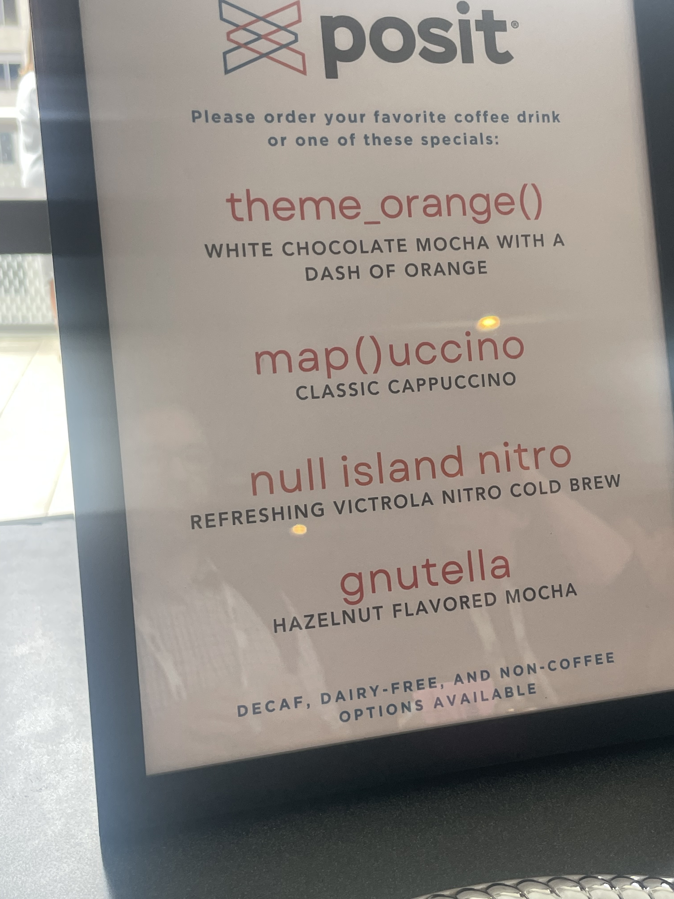
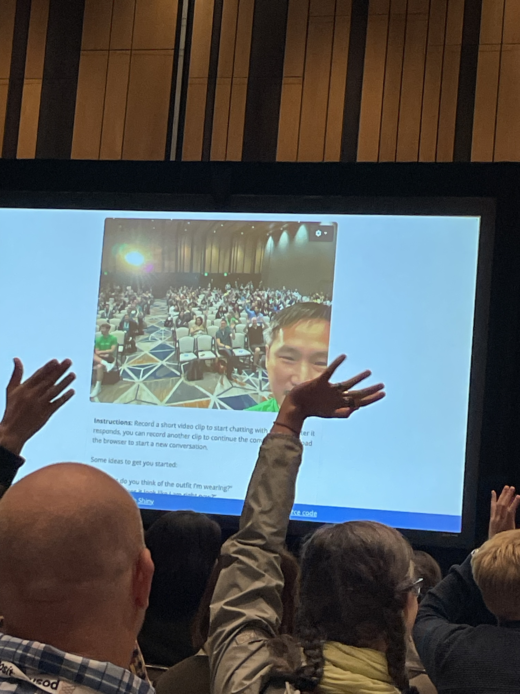
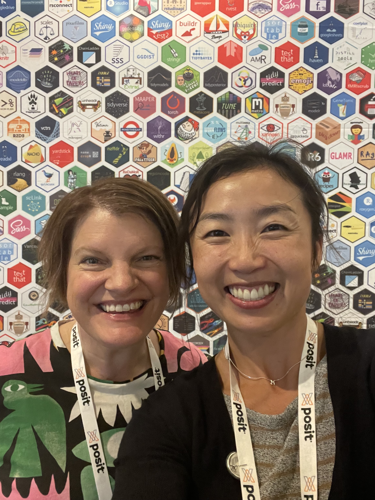

posit::conf(2024)
If you told me 15 years ago when I was learning how to program in R that I would be attending posit::conf(2024) - a 3 day conference that celebrates data science and its community, I probably wouldn’t have believed you

Preamble
Nearly two months ago, I attended my first posit::conf(2024) as an Opportunity Scholar1. I didn’t know what to expect. I was intimidated because I didn’t know many people who were attending but I’ve heard great things about the conference itself and wanted some find some career direction2
This post serves as my recap3 of posit::conf and what really stuck with me since. If you are reading this and I attended the conference before, thank you for making the it awesome 💜. If you have never been to posit::conf, I hope you find my experience insightful and encouraging to go to the next one. Check out the posts by Stefanie Butland and Jen Richmond to hear about their conference experience.
The magic of open source communities
What was a sharp contrast to my previous conference experiences4 is that at posit::conf, there is this invisible, but universally felt, sense of shared love and pride for all the open source tools we use everyday.
Conference small talk is usually a dreaded activity, but because of this common thread that connected us, it was so easy to flow from awkward introductions to more insightful discussions. “What’s your favourite package”, “What kinda R do you do?”, “What is the coolest hex you’ve found?” were some really simple ways to get the conservations going.
The general vibe of all the talks was very humble and warm. It was a gentle “Hey I did this cool thing in my free time, and I encourage you to do the same because we can support each other and can do great things”. This sense of comradery continues to motivate me to try out all the new things I’ve learned at the conference.

In three dimension
Being an R programmer can be a physically isolating experience. I go to work, I turn on my computer and I code - by myself. If I need help, my first point of support is Google which usually points me to the resources that are written by folks in the R community. In reality, I was not really alone to begin with. I have this incredible, generous community to lean on.
What was very apparent to me at posit::conf was that the names I have become familiar with over the years are all here in three-dimension. Hadley Wickham, Jenny Bryan, Julie Lowndes and so many more! I felt a great sense of gratitude and maybe a bit of fan-girling for their contributions to the community

Importantly, this gratitude had turned into motivation of wanting to contribute back to the community. The size of the contribution is not important here, it’s the act of doing itself is what is key.
This could mean:
- writing a really good reprex of a question in a forum like Posit Community or Stack Overflow or Github Issues.
- writing a kind, considered and helpful reply to an existing question
- write a quick blog on your problem and solution, tag it will keywords so that it may be searchable
- give a workshop to your local community, record it for others
Remembering your contribution might address another person’s problem
A small fry’s impact
I was expecting to go to the conference to absorb, to learn, to be in the shadows and take it all in. Hearing folks say: “Oh my goodness, you’re Fonti?!” was really surreal. What? Is this really happening? To learn that the small things I’ve done have supported someone was just so warm and fuzzy. I had a great chat with Lee Durbin about his journey since attending my R packages workshop gave me a sense of pride.
These experiences reaffirmed my passion and sense of belonging in the community. It made me want to do more, do better and share it with others. It also reassured me to just - be - myself.
Take homes
What is clear to me was that posit::conf celebrates the open source R and Python community.
The communities’ generosity in sharing their knowledge is magnified at the conference and encourages you to contribute.
Your contributions, no matter how small or insignificant you think it may be, can still drive positivity.

Footnotes
The Opportunity Scholar program is one of Posit’s initiatives to celebrate and support folks from groups that are not well represented in the data science community to attend posit::conf. Attending a conference is very costly - there are many considerations, time from work, child/dependent care, travel, accommodation. If it wasn’t for the program, I would not have been able to attend posit::conf. I highly recommend putting an application in.↩︎
I finished my PhD in 2020 and found myself in a job dedicated to working with researchers and building R packages and Shiny applications. I’m technically a “research software engineer” but to me that title doesn’t sit right. This role been an amazing opportunity to deeply learn about software engineering practices but as a biologist at heart, I desperately missed answering questions with my data skills. Being in somewhat of a career crossroad/existential crisis, it was important for me to attend posit::conf. I wanted to meet other kindred spirits that shared the enthusiasm I have for everything I know about R and see what they are doing.↩︎
It goes without saying, but I am going to say it anyway, my perspective is reflective of my experience so it is only one tiny slice of many experiences of posit::conf.↩︎
By training, I am an evolutionary biologist and ecologist. The conferences I’ve been to were less about the community and more about showcasing your own research and establishing your own niche. Some meetings were more friendly than others and generally, hierarchy is more apparent which can feel a bit unwelcoming for newcomers↩︎